Windows 2: Final Fantasy of operating systems
by Nina Kalinina, December 2024
It is common knowledge that Final Fantasy could have been the last game in the series. It is far less known that Windows 2, released around the same time, could too have been the last. If anything, things were more certain: even Microsoft believed that Windows 2 would be the last.

PC Paintbrush and MS Excel were some of the most successful programs for Windows 2.
The miracle of overwhelming commercial success brought incredible attention to Windows. The retro community and computer historians generally seem to be interested in the legendary origins of the system (how it all began) or in its turnabout Windows 3.0 release (what did they do right?).
This story instead will be about the underdog of Windows, version 2. To understand where it all went wrong, we must start looking at events that happened even before Microsoft was founded. By necessity, I will talk a lot about Windows 1, too. Instead of following interpersonal/corporate drama, I will try to focus on the technical aspects of Windows and its competitors, as well as the technological limitations of the computers around the time. It is going to be quite a journey, and it might seem a bit random, but I promise that eventually, it all will start making sense.
Let's start with some hands-on Windows 2 experience to tempt you to read the full story!
Living with Windows 2
Our personal TARDIS took us to the 31st of December 1989 or so. Our test machine is, perhaps, a cheap IBM PC AT clone 286/12 with 1 megabyte of RAM (around $995 for the system and peripherals, depending on the hard drive and monitor). But Windows 2 would work even on a $600 IBM PC XT compatible.
Let me put this into perspective: a decent system that can run Windows 2.0 smoothly runs at 0.012 GHz and has 0.002 gigabytes of RAM. Likely, your phone is at least one hundred times as fast and has one thousand times more RAM.

Most people would experience Windows 2 through a version shipped with Microsoft Excel. It can calculate stonks and plot charts. What else do you need?
Standard applications
Due to a number of reasons, standard Windows 2 applications are almost exactly the same as Windows 1 applications.
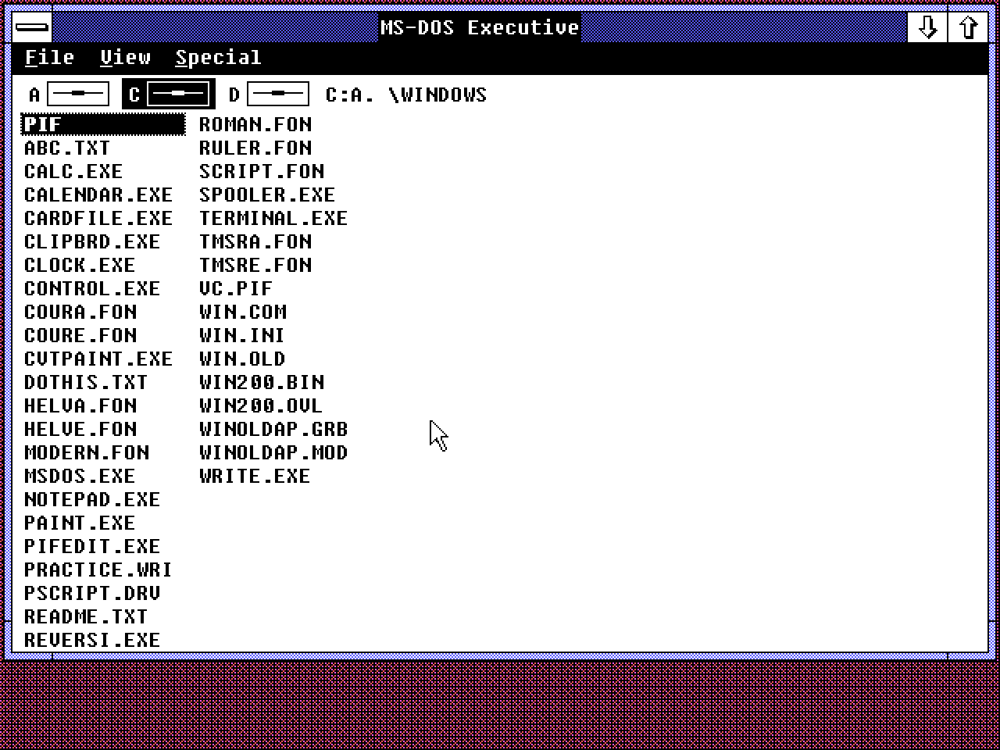
MS-DOS Executive is sort of a file manager for Windows that is used to start programs.

Notepad is as unassuming as ever. No Copilot yet. Note how minimized applications are represented by an icon on a desktop. This used to be a common idea across many contemporary systems.

Calculator is very minimalistic. Write is clearly Microsoft's response to Apple's MacWrite.
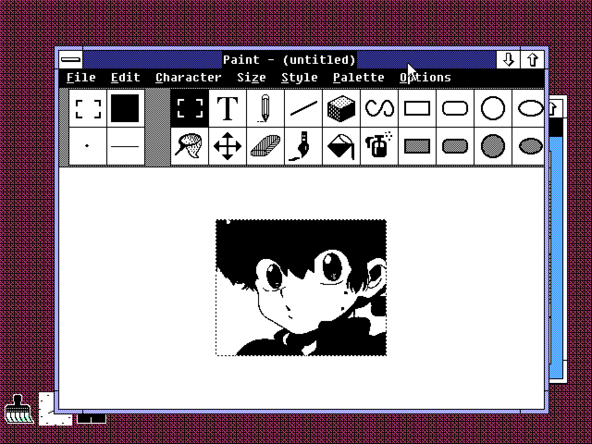
Paint is similar to MacPaint, too. It is monochrome, and it looks exactly like Paint in Windows 1, but uses a different file format (?!).
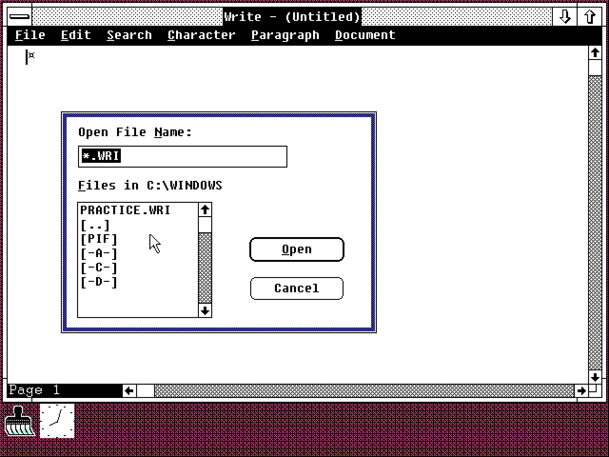
There is no proper Open file dialog. It was implemented as a part of CommDlg in Windows 3.1.
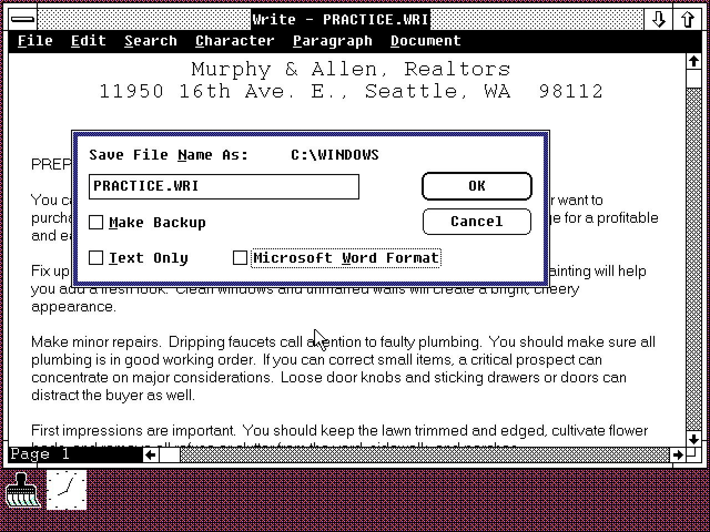
It's Wild West of modal windows, folks! Also, I wonder what "Microsoft Word format" they mean; there were at least Word For Dos and Word For Mac at this point.
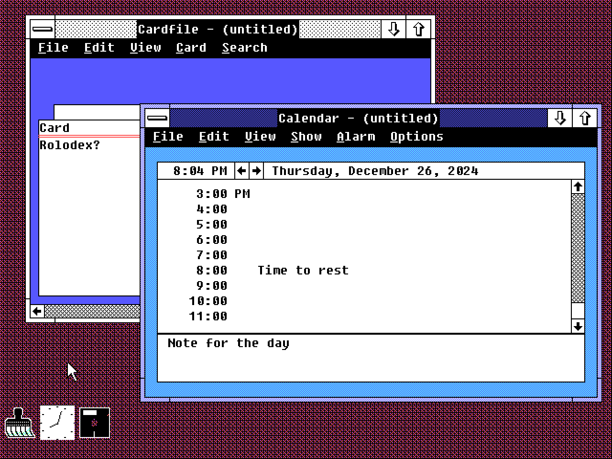
Calendar and Cardfile are more useful than they might seem.

Control panel allows to create your own Hot Dog Stand interface, if you want.

The networking tools in Windows 2.0 are basically non-existent. The terminal tool is beyond basic.

Built-in entertainment is represented by an intellectual game of reversi. You need 3.0 for Solitaire, 3.1 for Minesweeper, and WfW for Hearts.
Additional software
The list is non-exhaustive, and even misses some major pieces of software (Corel DRAW!, for example). This is more to illustrate that Windows 2 had some useful apps.

Back in the 80s, Microsoft's office apps were much more popular on Mac than on PC. Maybe that's because Word for DOS was really ugly. It took Microsoft years to bring graphical Word on the PC, and you're witnessing it.

Perhaps this is why Microsoft made Project? To release their software in time.

Windows 2 SDK is shipped with a few neat tools for software developers. It is not quite Visual C yet, but it is not not visual.

Aldus Pagemaker was one of the first programs to release for Windows. Some video cards supported screens as large as 1024x768 in 256 colours, which is pretty darn good for typesetting. Pagemaker 3 could use much more RAM than Pagemaker 1, and is actually quite usable.

Adobe Illustrator does not require an account just yet; there is no generative AI in it either.

It is quite basic as far as vector editors go, but it has CMYK and PostScript support.

Xerox Presents is a PowerPoint-style app. There was no PowerPoint for Windows just yet, as Microsoft has just bought the company that made it.

Xerox Presents comes with some nifty vector clipart, and even supports vector scalable fonts.

It is quite obvious that MS-DOS Executive is not a great way to start programs. There were many alternatives, and Clearview was one of the more advanced ones.

Windows Application Manager aims to solve the same problem, but cheaper.

ZSoft Paintbrush is a bit of a pain to use on Windows, because Windows only supports 8 colours on the most common video cards (EGA and VGA, both normally support at least 16 colours). But the program itself looks just like Microsoft Paintbrush from Windows 3.0.

That's right! Because Microsoft has licensed ZSoft Paintbrush for its MS Mouse and MS Windows. Also. you can tell that I just needed an excuse to add two screenshots of the program...

XVT Draw is a shareware vector editor. It feels much faster than Illustrator or DRAW!
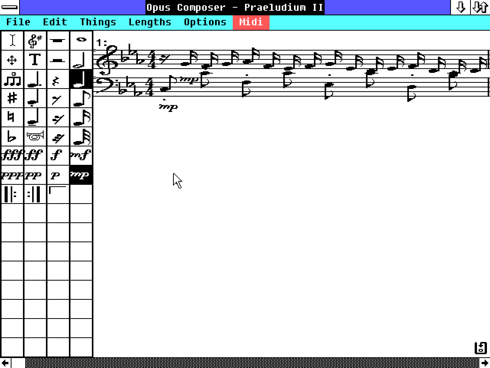
Opus Composer, also known as WinSong, was made for Windows 1, but it is slightly more useable on Windows 2. The full version of the progam comes with MIDI support.

Opus Tapedeck is a counterpart for Opus Composer that works just as a player utility.

The genre of desktop organisers seemed to be popular. This is Packrat. Another popular organiser (also called "PIM") for Windows 2 was IBM Current.

CaseLiner is a tool for generating liners for your mixtapes.

Comprog brings networking on Windows 2.0 to the next level: now you can connect to BBSes and download files (BBS, bulletin board system, is sort of a website before websites were a thing).
Entertainment
There weren't many games for Windows 2, but there were some.

ChessNet allows you to play chess over modem. It's much faster than chess over email!

Remember I told you there is no Solitaire for Windows 2? Turns out, I lied! There is a shareware version that looks nothing like MS Solitaire but still as fun to play.
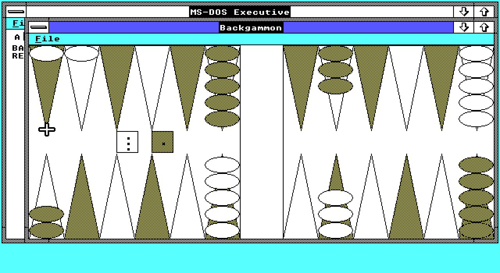
Backgammon has a case of a quirky interface. It's likely going to work just fine in Windows 1, too.
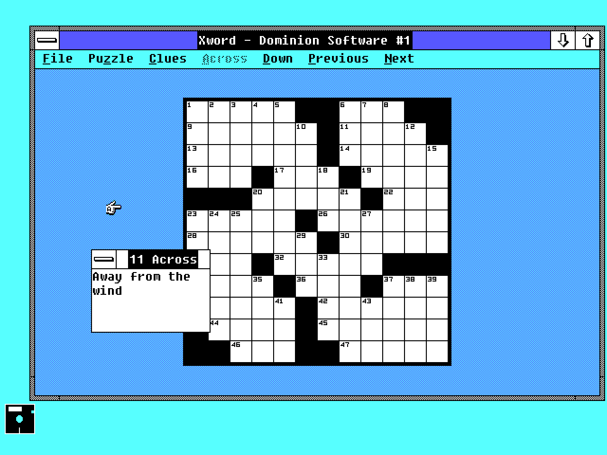
Crosswords are fun. Don't you like crosswords? Crosswords!

Starbase is probably the only example of an action game for Windows 2. Someone tries to bomb your star base! It is hectic and very violent.

Taipei is very pretty, and this is why I put it at the end.
Now, I hope, you are ready for the history tour? I had to start somewhere, and The mother of all demos seemed as good place as any.
1968-12 "The mother of all demos"

A lecture later called "The mother of all demos" combines graphic displays, computer mouse, windows, and much more.
Why was it important?
It has been a few decades since the invention of electronic computers, but they are still so costly only some businesses can afford one. Most people cannot even begin to imagine what they would do with one. A group of scientists tries to imagine what could be done with the computers of the future and prepares a presentation of multiple technologies that will be known as "The mother of all demos".
Incredibly, there is a recording, but it is pretty unimpressive by modern standards: https://www.youtube.com/watch?v=yJDv-zdhzMY
Image source: "The mother of all demos" itself.
1973-03 Xerox Alto

A research division of Xerox, Xerox PARC, releases an experimental computer "workstation" called Alto. An attempt to streamline "The mother of all demos", Alto is the first mass-produced system with a graphical user interface. The computer is made from hundreds of tiny computer chips, and the price starts at $32,000. There is very little demand for such a computer.
Image source: Xerox's Alto commercial.
1977-06 Apple II

Until the release of PC and perhaps even for a few years after it, people usually meant "Apple II" when they were saying "personal computer".
The boom of microcomputers?
Since 1970, the semiconductor and computer chip industry has kept doubling chip features while keeping the costs relatively constant. By 1977, a whole computer processor, comparable in performance to Apollo Guidance Computer's processor, would fit on a silicon crystal smaller than a fingernail and might cost about $10.
This created an opportunity to produce small, inexpensive computers for individual usage. A remarkable example of such a computer is the Apple II, released in June 1977, with a retail price of $1,298.
Two other significant computers, Commodore PET and TRS-80, were released the same year, and a competitive microcomputer market started to form. There was little software available for these computers at first, and owners often had to write their own programs using built-in BASIC programming language.
1979-06 Intel 8088

Intel 8088 central processor is not quite revolutionary, but it packs a good punch. It is 16-bit, and it uses the segment memory model instead of banking.
Bits? Banking? Segments?
Integer number sizes
The overwhelming majority of processors in early home computers were "8-bit"; that is, they could operate only with integer numbers between 0 and 255. Computing bigger numbers would require the processor to perform multiple steps.
If you're struggling to grasp the idea, imagine calculating a sum of 789 and 123 using only sums of single digits: start from the right-most number with 9+3, that's 2 and carry one, then 8+2+carry, that's 1 and carry one, and then 7+1+carry is 9, so the total is 912. Calculating a sum of 1234 and 5678 would require a similar procedure on an 8-bit computer.
A more sophisticated and thus more expensive 16-bit processor could solve this math problem in a single operation because the biggest integer number it can handle is 65,535. A big chunk of computing deals with numbers around this range, so a 16-bit processor with the same "number of operations per second" as an 8-bit processor will likely be much more performant.
Address bus size
The central processor usually doesn't have much memory to store the data. Instead, it stores data in memory chips connected to the CPU through "address bus" and "data bus". The data bus transfers the actual information back and forth, while the address bus determines where to store the data in memory.
Thus, the address bus size ("width") determines how much RAM the computer can use without relying on engineering tricks. The logic is the same as with the integer sizes:
8-bit bus = 256 addresses,
16-bit bus = 64K (65,536) addresses,
20-bit bus = 1M (1,048,576) addresses,
24-bit bus = 16M addresses,
32-bit bus = 4G addresses
When processors calculate the addresses for the address bus, they usually have to deal with the same limitations as during integer calculations. Thus, calculating a 16-bit bus address would require multiple operations on an 8-bit processor.
Unfortunately, any serious computing requires at least a few kilobytes of memory. Hence, computers based on 8-bit processors usually had to have a 16-bit address bus and no choice but to regularly spend multiple operations calculating addresses in the memory.
Memory management model
The simplest way to use computer memory is sometimes called a "flat model". A computer with a 16-bit address bus using flat memory can have not more than 64K of addressable memory elements. This is a problem because things like text documents, spreadsheets and photos simply do not fit in 64K.
A way to bypass this limitation is to implement "bank switching" (or simply "banking"). Let's say you want 128K of memory on a system with a 16-bit data bus. A common way to implement this is to divide 128K into 8 "banks" of 16K each and add clever circuitry to allow you to choose how these banks are connected to the address bus "on the fly".
For example, you can have banks 0, 1 and 2 available to the processor at addresses 0, 1x16K and 2x16K, but the 3x16K addresses could be connected to any of the banks. Voila, your 16-bit system can access more memory! The downside is that you cannot directly copy things between, say, bank 4 and bank 6, as they cannot be mapped to the "address space" simultaneously.
Segment memory model
Many 16-bit processors use an advanced variant of bank switching known as "segmentation". With segment memory, a processor can access multiple 64K "segments" simultaneously. For example, x86 processors have a Code Segment, which has the program you execute now, a Data Segment to access your data, an Extra Segment to compare or copy memory between two segments and a Stack Segment to store intermediate calculation results. It is much faster than banking but still requires the programmer to use a lot of magic to avoid the limitations imposed by the 64K segment size.
Intel 8086 and Intel 8088
Both i86 and i88 are 16-bit processors with 20-bit address bus. This means that they support up to 1 megabyte of RAM. These processors use segment memory to avoid long, expensive memory address computations. Initially, the listed price was $124, but quickly dropped to just $14.
A glimpse into the future - Motorola 68000
Introduced just a few months after the Intel 8088, Motorola 68000 is a 32-bit processor with a 24-bit address bus and a convenient flat memory model. It was seen as a more expensive chip, with the price tag starting at $125. Curiously, the price decreased to about $15 in just a few years.
1979-10 VisiCalc

VisiCorp publishes the first spreadsheet program for home computers, VisiCalc for Apple II. Dubbed "the first killer app for the personal computer", it was massively popular. "I need VisiCalc, so I am going to buy a very expensive computer to run it" level of popular.
It looks like a regular spreadsheet app, yes, but there is no mouse support, and there are no menus. The program, quite simple at its heart, came with a 180 page long manual, because it was impossible to figure out how to use it otherwise.
1979-?? Steve Jobs decides to make a computer with a graphical interface

Xerox Palo Alto Research Centre, or PARC.
Steve Jobs sees Xerox Alto in Xerox PARC, and becomes obsessed with graphical interfaces. Shortly after, he strucks a deal with Xerox, where Xerox could buy a chunk of Apple stock in exchange for Xerox'es patents.
I was so blinded by the first thing they showed me, which was the graphical user interface. I thought it was the best thing I’d ever seen in my life. Now remember it was very flawed. What we saw was incomplete, they’d done a bunch of things wrong, but we didn’t know that at the time. But still [we] thought they had the germ of the idea[, it] was there and they’d done it very well. And within – you know – ten minutes it was obvious to me that all computers would work like this some day. It was obvious. You could argue about how many years it would take. You could argue about who the winners and losers might be. You could’t argue about the inevitability, it was so obvious.
-- Steve Jobs, interview for "Triumph of the Nerds"
This pivots a computer in the development, Apple Lisa, from being a revamp of Apple II into being something completely new.
1980-08 IBM starts working on PC

The Blue Giant becomes mildly interested in a home computers market, and decides to build a cheap home computer, uncharacteristically for the company outsourcing many parts of the project. A small group of engineers starts working on IBM PC, using Intel 8088 processor because it is the cheapest 16-bit CPU they can find. IBM needs an operating system for their new computer, and starts shopping around.
1981-04 Xerox Star
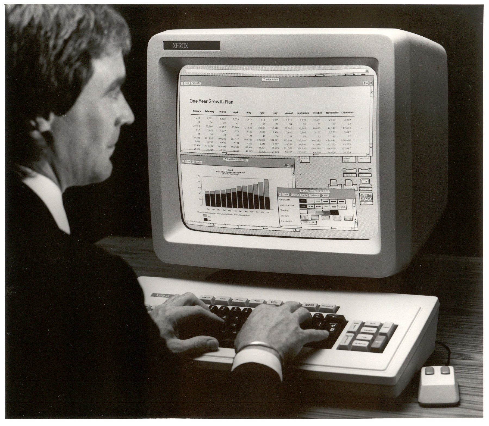
Xerox polishes ideas from Alto and releases the very first computer using "desktop" paradigm and "folders", Xerox Star 8010. It is a wonderful machine, with a high-resolution screen, mouse, what-you-see-is-what-you-get, and so on. Alas, the basic model costs $75,000.
1981-08 IBM PC

IBM releases its home computer IBM PC, with a price tag starting at an almost reasonable $1,565. IBM PC comes either with BASIC, or a disk operating system called PC-DOS. Either way, all you're getting is black screen with white (or green) letters on it. The operating system was developed by Microsoft, a compiler company that supplied BASIC to maybe half of all the home computers.
The computer, as expected from an i8088-based one, had a segment memory model. While the processor supported up to 1 megabyte of address space, large areas of it were pre-allocated for service usage, so the maximum amount of memory a user could have was limited to 640K. Which was still a lot for the time, because the BASIC model of IBM PC would have only 16K. Moreover, 8-bit contemporaries would rarely have more than 64 or 128K.
1981-09 Rumours about Apple Lisa

Three years in the works, Apple Lisa starts to get a shape. Rumours about it start spreading around the industry, naming it an upcoming Xerox Star competitor. Journalists are thrilled to learn that it probably will support a mouse (which was invented a long ago, but was not a common accesory just yet).
1981-09 Microsoft Interface Manager (?)
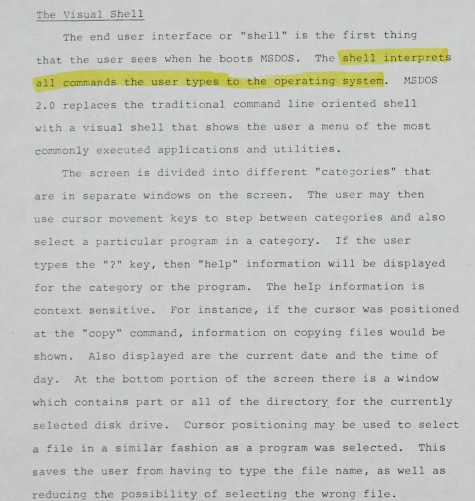
Even in the early 80s there was a big demand for user-friendliness. Microsoft starts investing into its own user-friendly interface, as seen in the above note from Paul Allen (c. 1982). It is likely that the work on something known internally as Interface Manager has begun not later than in September 1981.
In 1981, the Apps division of Microsoft (Microsoft had two primary divisions during this time - "Systems" and "Apps", for systems software and application development respectively) began to develop a common interface library for all of the productivity applications being developed within the division at the time (mostly Word and the Multiplan spreadsheet). This went by several names, notably MUSH (Microsoft User SHell) and Interface Manager, and is an entirely text-mode UI framework signified by the "session control" strip with context-specific commands at the bottom of the screen. There were also brief plans for a "visual shell" using this UI to be shipped using DOS 2.0, but these were scrapped before the final release. Variants of the MUSH/Interface Manager interface would ship in DOS Word 1.0 and Multiplan in 1982...
-- Betawiki
It all started with Charles Simonyi. He created the first WYSIWYG word processor for Xerox PARC, got tired of it, and around 1980, was looking for new opportunities. His ex-coworker and founder of 3Com, Robert Metcalfe, has introduced Charles to Bill Gates, where Simonyi started working on a spreadsheet program. Shortly after, Simonyi hired his co-worker from Xerox PARC, Richard Brodie, to help with Multiplan. This was the beginning of the Apps division. It is said [citation needed] that when Brodie joined Microsoft, Multiplan did not have a menu system just yet, and Brodie was insistent on adding one. Brodie himself mentions that he primarily was working on Microsoft p-Code C compiler, though. So, this might or might not be the beginning of the Windows code.
1981-11 VisiCalc's developers are actively working on a graphical interface
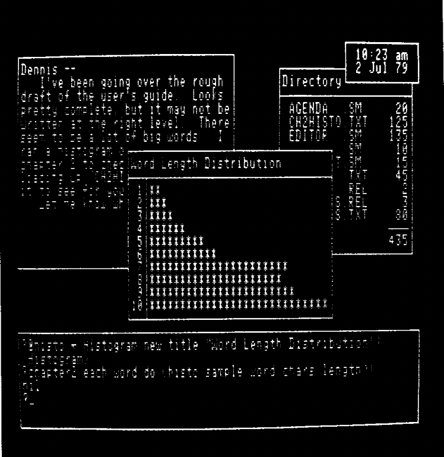
Impressive interface of Xerox Star and rumours about not-yet-released Lisa make the creators of VisiCalc consider their future investment. The company's president learns about a small team from Texas (Scott Warren and Dennis Abbe) who created a variant of Xerox PARC's Smalltalk with a windowing interface for seriously underpowered home computers, and hires them to create the company's next big thing.
1982-08 Microsoft Multiplan
As mentioned earlier, Microsoft has been working on their own VisiCalc competitor. It was released in August 1982, and despite the rock star project's staff, it wasn't selling all too well. Journalists are curious whether Microsoft might release a word processor, and the company's representative hints that they might be working on a mouse-controlled interface:
The way that the word processor becomes really nice is when you get away from keyboard input. Which means, use keyboard input for words only and use something like a mouse, or a joy stick, or a track ball for the editing commands.
-- Vern Raburn, President of Microsoft Consumer Products, in interview for PC Magazine April 1982
The command strip bar at the bottom of the screen was considered quite user-friendly at the time. Note that even the very first release of Multiplan supports multiple "windows" to display multiple spreadsheets simultaneously.
1982-11 VisiCorp presents VisiOn on COMDEX
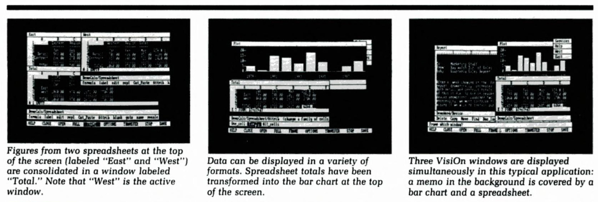
A demo of VisiOn, the graphical multi-tasking shell by VisiCorp, is a smash hit on the biggest PC conference COMDEX. Multiple sources quote that it influenced Bill Gates to prioritise work on what later will become "Windows", but it is unclear whether he was inspired or outraged. Perhaps, he was not comfortable with VisiCorp entering his home turf, operating systems (despite Microsoft just entering the VisiCorp's one).
1982-12 Sun Window System is being developed

Star, Lisa, and now VisiOn created sort of a "user interface fever", it seems. Even Sun Microsystems begins working on a Sun Window System for its pricey computer Sun-1. Sun-1 was a "workstation", kind of a super beefy computer for science, technology and networking.
1983-01 Apple Lisa

Xerox Star was pretty close to the idea of modern computers, but it was still very rough around the corners. For example, if one window would overlap with the other, the bottom window would stop updating. Not a big deal unless your bottom window is a clock or a mail app. Apple Lisa, though, polished the interface. Just check out this video. It was more affordable than Star, but $9,995 was still quite a price tag.
"The most important development in computers in the last five years, easily outpacing [the IBM PC]"
-- BYTE, 1983-02
Despite the praise, the series was a commercial failure, likely due to its high cost and annoying slowness.
1983-02 PC Magazine declares 1983 the year of mouse

If you skim over PC Magazine from 1982, you are more likely to find a mention of Mickey Mouse than a "mouse" as a pointer device. The next year, though, they proclaim "The Year of Mouse on PC". The actual year of mouse in the Lunar calendar was actually 1984, what a shame. A big feature of the February issue is not-yet released VisiOn which is going to be all about the mouse.
This issue marks the unofficial IBM debut of California’s second-most famous rodent: the computer mouse. (Mickey and Minnie’s first-born, "Micro”?)
-- PC Mag, February 1983
...menu-driven systems as Apple’s new Lisa or the Xerox 8010 (better known as the “Star”) have, in fact, elevated the mouse's status from a laboratory curiosity to rodent stardom.
-- "The Tale Of The Mouse", PC Mag, 02/83
You simply point to what you want to do by using a mouse... VisiOn handles windows on the screen in a way that makes it look as if one piece of paper is on top of another...
-- "VisiOn, a mouse on the digital desktop", PC Mag, 02/83
The magazine mentions a multitude of vendors, most notably, Mouse Systems. Mouse Systems was responsible for Sun's mice, and was the first company to offer a mouse for PC. Naturally, VisiOn is expected to use Mouse Systems as well.
1983-04 Microsoft Interface Manager internal demo
New Microsoft logo from around that time.
According to "Barbarians led by Bill Gates" by Eller, somewhere around late 1982, a small team of engineers at Microsoft was tasked to copy VisiOn and reverse-engineer Xerox Star. The result of a few months of work, a demo called "Interface Manager", was presented internally in April 1983.
1983-05 Microsoft Mouse and Multi-Tool Notepad
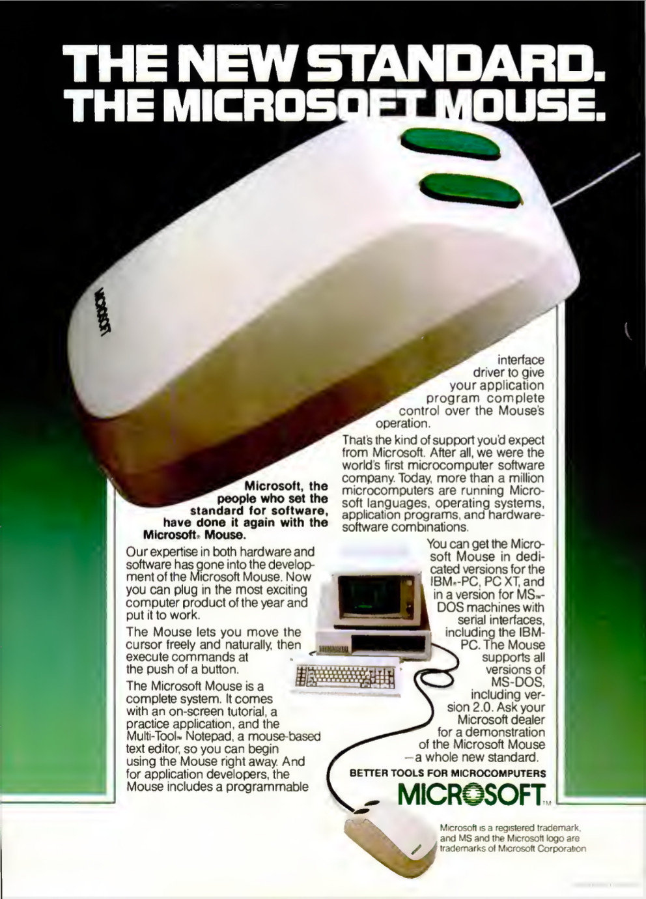
Back in 1983, there was no software using computer mice just yet. It is a bit of a chicken-and-egg problem: you cannot sell a mouse-using program when users don't have mice, and you cannot sell mice because there are no programs where you could use it. A common solution for similar conundrums was to bundle hardware and software. If upcoming Microsoft Word needed a mouse, Microsoft had to make and sell one. The standard software included a toy piano, a primitive but one of the first colour graphics editors, and, wait for it...
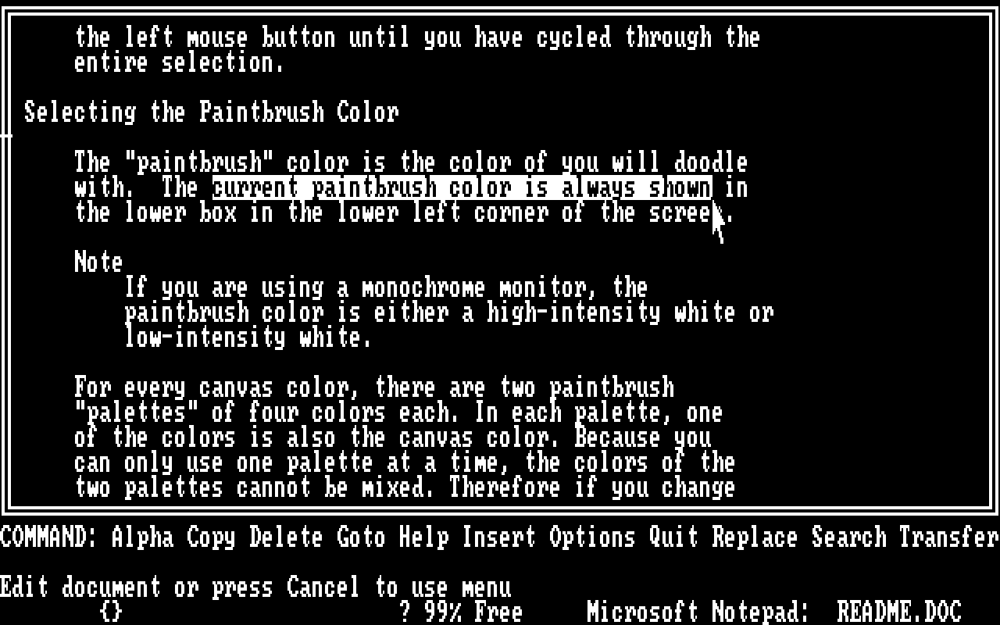
Microsoft Notepad. Both Word and its stripped-down format-less little sister Notepad were developed by Richard Brodie, using the very same interface library as Multiplan, but with mouse support. The interface has some arguable decisions. For example, menu options are listed alphabetically, and the scroll is displayed on the left. Moreover, the scroll does not support "dragging"; instead, clicking left or right mouse button would scroll the document up or down. Some of those decisions would stick in MS interfaces for a while!
1983-09 Microsoft Word
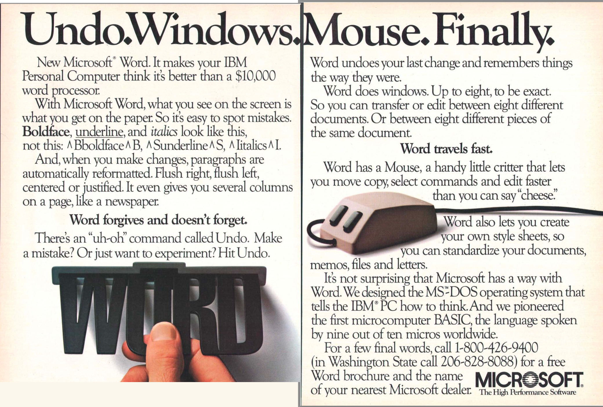
Both Notepad and Word were announced around the same time, but it took a few months for Word to actually ship. The first version was released for now long forgotten "this-will-be-the-future" XENIX operating system under the name of Multi-Tool Word, to share the branding with other Multiplan-related programs. The IBM PC version has followed shortly, and it was simply named Microsoft Word.

Despite the big promise of windowing support in the commercials, Word's windows were as simplistic as the ones in Multiplan. It still was a neat feature, being able to open two files at the same time.
1983-09 Microsoft Windows goes public

A new demo of Interface Manager, freshly renamed to "Microsoft Windows" to boost brand recognition, was presented to the reporters from BYTE magazine. It looks like a real operating system, but if you look closely enough, you will notice that it is all smoke and mirrors.
"Plan" and "Word" display the same file on all photos, and things do not look quite usable yet. One of the things notably missing is the scrollbar. If you think about it, the interface on this demo looks exactly like Multiplan on steroids. Even the alphabetically-sorted command strip in the bottom of the screen looks the same.
There are big expectations, though. It is said that Windows will support not only IBM PC but many other computers. Windows promises to be cheap to run, requiring only 192 KB of RAM and no hard drive.
You can read the original article from BYTE reposted on Toasty Tech.
Curiously, the article was only published in December 1983, after the COMDEX.
1983-11 Microsoft presents Windows at COMDEX
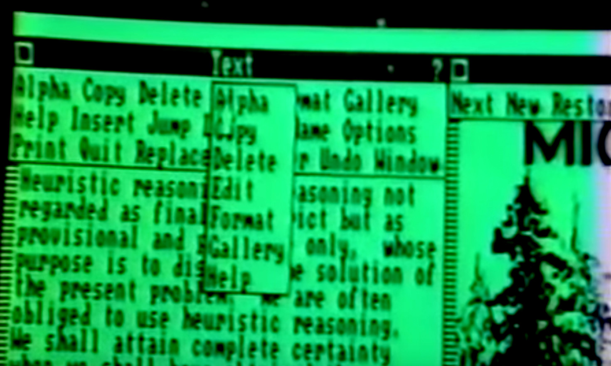
While VisiOn is behind the schedule, with release announced, but disks not quite hitting the shelves just yet, Microsoft hijacks COMDEX with a guerilla promotion campaign for Microsoft Windows. As some sources say, Microsoft ordered thousands of pillowcases promoting Windows and placed them in hotels around the conference. Just about every person near COMDEX now knows what Windows is and how much better it will be compared to VisiOn.
The demo is still smoke and mirrors, but the scrollbars (on the left side of the window!) are back. Each window now has a menu strip, and there are drop-down menus, just like on Lisa. All for just $99, and it will run on your $1,500 (plus mouse) PC.
You can read a full review of the demo on Toasty Tech.
1983-11 Sun Window System (Sunwindows)

Sun-2 computer ships with its own graphical user interface, called Sunwindows. Sunwindows is not the most remarkable feature of a 32-bit Motorola 68010-based $16,900 computer, so no one really cares.
Like, no one cares so much, there wasn't even an image of the system in the release announcement posted in Computerworld. They could not be bothered to post a single commercial, so instead you see a photo from the Sun's competitor Apollo from the same magazine. Apollo had their own graphical system called Domain released around the same time, virtually unknown to anyone. See, told you, no one cares. Not when your computer is more expensive than notorious Apple Lisa.
1983-12 VisiCorp Visi On

The mammoth is finally released, and no one is impressed. Visi On is $999, slow, memory-hungry, and requires a hard disk. With all the add-ons needed to run it, the total cost of the PC is getting close to 3/4 of Apple Lisa, for a much poorer experience. Third-party app developers were expected to invest in a $20,000 DEC computer to run the cross-compiler for Visi On.
The system was doomed and had no software released except the one VisiCorp shipped with it originally. The company lost many key developers during the work on VisiOn due to poor management and went under shortly after the release.
1984-01 Apple Macintosh
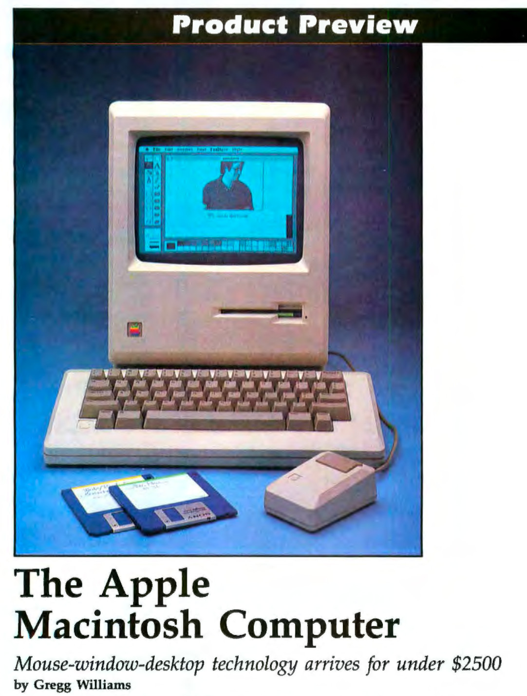
Apple unveils Macintosh. It is a bit pricey ($2,495), but it is sleek, it is snappy, and it has MacWrite and MacPaint.
Granted, it does not support colour, trading it for high resolution, but it is seriously good.
1984-05 Windows DR preview
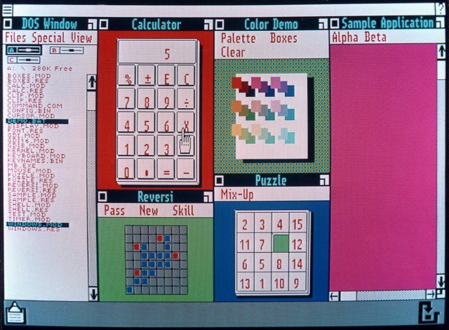
In May 1984, Windows is not quite ready for the general public, but Microsoft releases the first build for a small group of software vendors. The system doesn't use overlapping windows like Mac or Visi On; instead, the windows are tiled. According to the Xerox PARC research, tiling is superior - but the press doesn't like it.
1984-08 IBM announces TopView
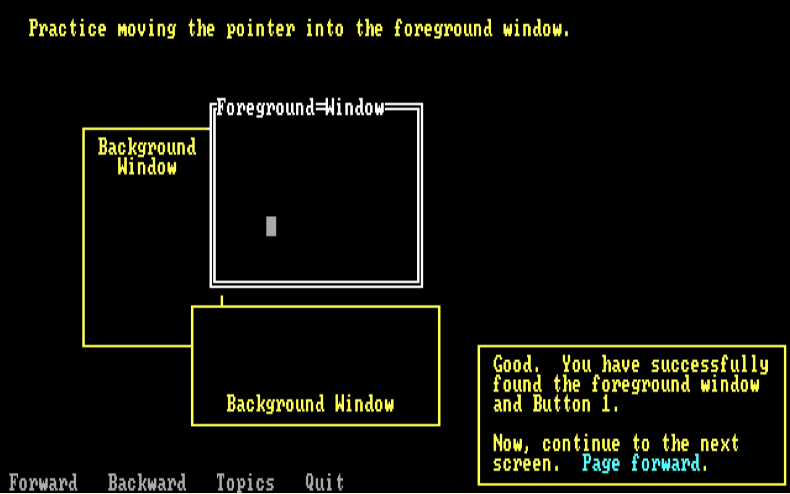
IBM decided to release their own windowing interface, to the dismay of Microsoft, their main operating system supplier. Microsoft's saving grace is that IBM TopView is going to be text-mode only, not really suitable for office applications.
1984-11 Digital Research GEM Desktop is presented at COMDEX
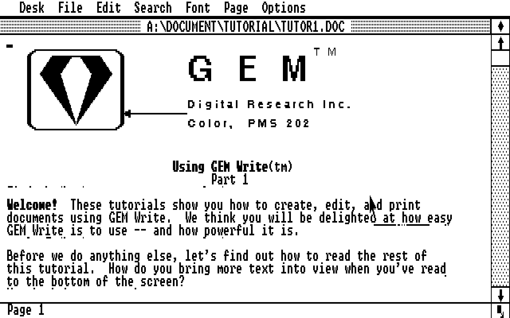
A year after the triumphant Windows reveal, and good ten months after Macinstosh. Windows was supposed to ship months ago, but is still nowhere to be seen. Digital Research presents a clone of Macintosh that runs on IBM PC. Even Steve Jobs seeminly praised the system.
Digital Research? Should I have known about them?
As you probably know, the main operating system for personal computers before Windows was Microsoft MS-DOS. But things were quite different before the IBM PC release; the market of operating systems for microcomputers was dominated by Digital Research's CP/M. The CP/M was so popular, Microsoft has borrowed from its design not once but at least twice. First, MS-DOS was heavily inspired by CP/M. Second, a Microsoft-made operating system for low-end Japanese computers, called MSX-DOS, was CP/M compatible.
IBM PC's popularity was a surprise to Digital Research. They were expecting users migrating from 8-bit computers with CP/M to 16-bit computers with CP/M-86, but CP/M-86 for IBM PC did not sell well.
1985-04 Commodore Amiga 1000
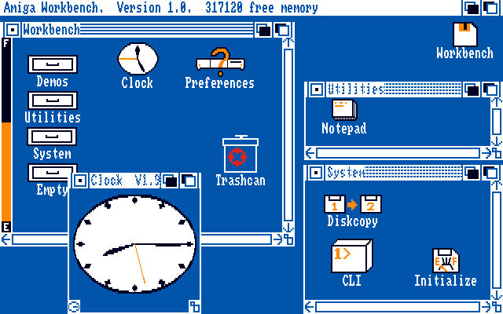
Amiga 1000, just like the Macintosh, comes with a graphical user interface. It is called "Intuition" or simply AmigaOS/Workbench. The reviews praise the hardware capabilities of the machine, but are not impressed with the interface. In the next few years the platform did not receive any killer app, and failed to win the market.
1985-05 EMS LIM

Intel AboveBoard is one of the examples of memory boards for IBM PC.
Barely four years after the IBM PC release, users have started to struggle with the maximum amount of RAM supported. For business users, a single high-resolution scan or a large spreadsheet will consume all the RAM available, even on a maxed-out 640K IBM PC.
A new Intel processor, 80286, supports up to 16 megabytes of RAM, but it breaks the compatibility with existing programs, so the industry is looking for a different solution. One such solution is Lotus-IBM-Microsoft Expanded Memory Specification, or LIM EMS for short.
EMS brings back the memory management model that was made obsolete by i86/i88: banking. An EMS card could carry up to 32 megabytes of RAM, but only 64 kilobytes of it will be available to the computer at any given time. A special driver and a special circuitry will configure which 64KB block will be available to the computer at any given time.
Microsoft thought that bank switching was inelegant but necessary. PC Magazine quotes Bill Gates: "It's garbage! It's a kludge! But we're going to do it".
1985-07 Windows Premiere Edition

In the summer of 1985, Windows is still not ready. To placate the press and the business partners about the release getting delayed for more than one year, Microsoft releases Windows 1.00 Premiere Edition for a selected few. As Microsoft promised, it can work from a floppy drive, but it requires close to 256KB of RAM just to start, leaving under 400 KB of RAM for user data and applications.
1985-08 IBM and Microsoft signed the "Joint Development Agreement"
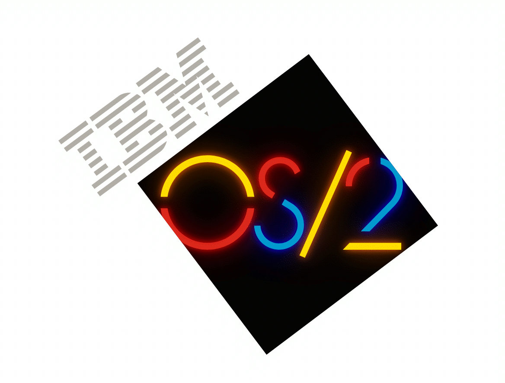
IBM wants a new operating system for the successor of IBM PC, IBM Personal System/2 (PS/2). Many things are up in the air, but it is clear: IBM TopView as a graphical interface did not work out. Microsoft hoped that IBM would license Windows, but instead IBM offers Microsoft to make a new system, OS/2, from scratch.
1985-09 Microsoft Excel
A victory for new Microsoft branding, Microsoft Excel - a Macintosh-exclusive spreadsheet. Released just a year after Multiplan for Macintosh, it is nevertheless a big leap forward in usability. Even if it is hard to tell from the first glance:
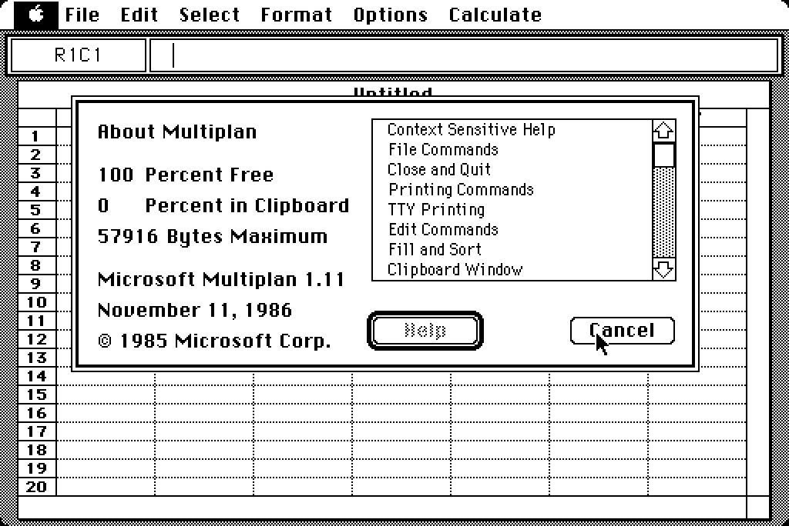
Microsoft Multiplan for Macintosh was released just a year before Excel, and looked almost identical.
For a short while, both programs were available.
1985-10 GEM must be phased out
Despite the praise from Jobs, Apple is furious about DR GEM Desktop infringing on Apple's user interface patents. Digital Research is not ready for a legal battle, and caves in. Apple will receive a financial compensation and a discount on Digital Research services. Digital Research, regrettably, has to pull out of selling GEM Desktop until it is changed to not resemble Macintosh.
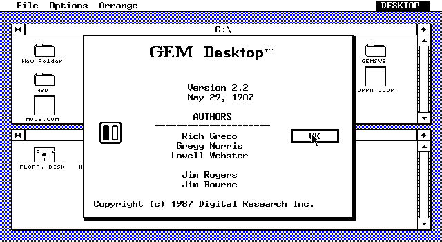
When GEM 2 is released, there are no overlapping windows anymore. It looks like just a shell of its old self. Will Windows meet the same fate?
Interlude: a shell or an operating system?
For at least a decade since the release of Windows, computer science purists have debated whether Windows is an operating system or merely an operating shell. Sure, it looks nothing like MS-DOS, and it offers many features that DOS simply does not have, like multitasking or a graphical interface, and has a driver subsystem. However, Windows would require MS-DOS to be installed on the computer for a very long time.
For an end user, it does not matter. Sure, Windows 95 boots on top of a custom MS-DOS kernel, but it looks and feels exactly like its look-alike Windows NT4 that runs on top of its own kernel. So, for this article, let's consider all Windows versions operating "systems".
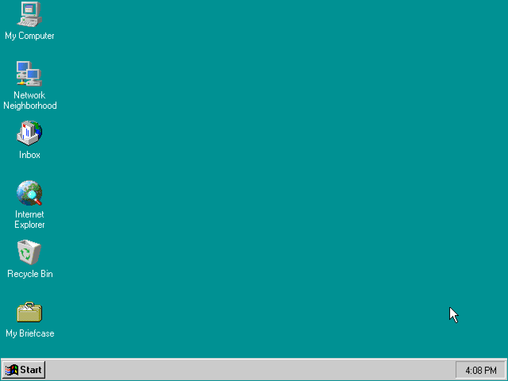
Can you tell, looking at the screenshot, whether it is an operating system (Windows NT) or an operating shell on top of MS-DOS (Windows 95)?
1985-11 Apple allows Microsoft to use its technology
DR GEM is not the only graphical system in the crosshair of Apple lawyers. Right before the Windows release, Bill Gates flies to Cupertino to offer an ultimatum to the CEO of Apple: Microsoft will not provide any software for Macintosh (including very popular Microsoft Excel) if Apple insists on attacking Windows. The negotiations ended with Microsoft getting official permission to use Apple's technology in Windows, as long as there were no overlapping windows and a "trashcan" icon. Plus, Microsoft will have to keep Excel as a Macintosh exclusive for a short while.
1985-11 Microsoft Windows 1.01

When Windows 1.01 finally ships to end-users, very few of them are excited. Tiling windows look unimpressive, and the program library for Windows is tiny. There is no support for freshly invented EMS yet. Windows can only support 640KB of RAM, even on machines that have more, and Windows apps are memory-hungry, so "Out of memory" is a ubiquitous error.

My 286 machine has 16 megabytes of EMS, yet one measly image and one tiny text document make Windows cry.
A major selling point for Windows was its capability to run old DOS applications in a window. In theory. In practice, this worked only with the most basic programs, as most software expected to have total control over the computer's resources.
Curiously, many modern sources quote that a significant drawback of Windows 1 was its lack of scalable proportional fonts. This is simply untrue: Helv and Tms Rmn shipped with it are both proportional and support sizes from 8 to 48 points (and they look nicer than on Mac starting from version 1.03). Only the interface elements (title bars and text in dialogue boxes) were proportional and looked a bit "clunky".
1986-09 Windows is on life support?
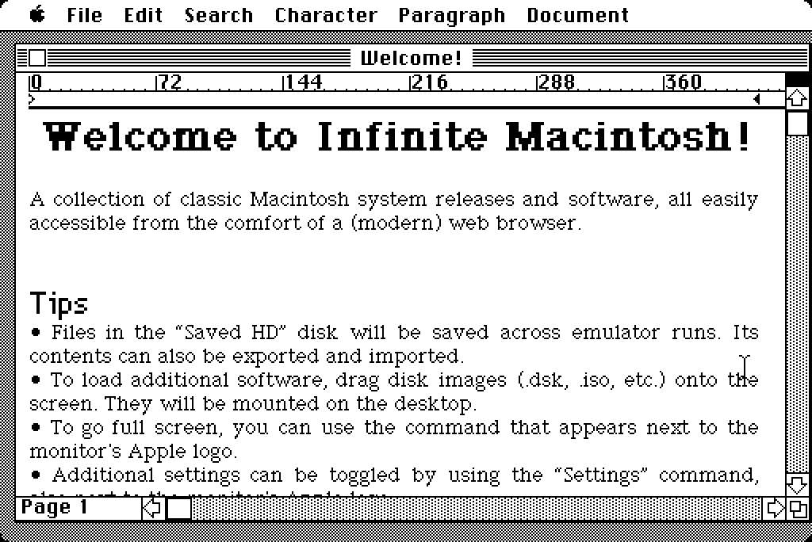
Word for Macintosh had an interface radically different from Word for DOS, just like Excel for Macintosh had an interface radically different from Multiplan.
With Windows out the door, most developers have left the project to focus on a graphical interface for OS/2 called Presentation Manager. There were still things Microsoft could do about Windows: if Excel for PC needs a graphical interface, it might as well be Microsoft Windows. And if that's the main goal, there aren't many things left to be implemented.
In "Barbarians Led by Bill Gates, " Eller claims that a team of three was left to run the project. "This is it, after this we're not going to have any more Windows. It's all OS/2", said Steve Ballmer. And because "it's all OS/2", even the Windows 2 interface had to be aligned with the upcoming OS/2 Program Manager interface.
It might be that the Windows 2.0 team was bigger than three engineers, as many ex-staffers, including the project's manager Tandy Trower, say. Regardless, Windows' days seemed to be numbered.
1986-09 Compaq DeskPro 386
, the very first DOS-compatible machine based on i386.
1987-09 Windows/386, a first variant of Windows 2.0 released for Compaq i386. It finally features overlapping windows.
1987-10 A "runtime" version of Windows 2 is used for IBM PC Excel release.
1987-12 Windows 2.03 released, hitting the stores in early 1988.
Barbarians Led by Bill Gates saying, “A couple people were left to maintain the Windows 2.0 code and fix any bugs reported, but the “glory days” of Windows, such as they were, appeared to be dead and gone. Last one out, turn off the lights.”
1988-03 Apple files a lawsuit againt Microsoft for patent violation in Windows 2.
1988-08 Dave Weise's pet project to port Windows kernel to 386 gains traction inside Microsoft. It is decided to release Windows 3.0 and develop it further.
1988-11 OS/2 1.1 includes Presentation Manager, developed jointly by Microsoft and IBM. A graphical interface of Presentation Manager is very similar to Windows 2.0. IBM insists Microsoft should kill Windows.
1989-07 Apple vs Microsoft lawsuit starts to look like a losing case for Apple.
1990-05 Microsoft releases Windows 3.0, and it sells. This eventually results in Microsoft Word and Excel gaining significant market share due to competitors (Lotus and WordPerfect) not supporting Windows and expecting OS/2 to become a standard instead. IBM is upset and nopes out of the joint OS/2 development.
Sources
- Many photographs are sourced from Wikipedia; see links below.
- Dates and trivia are taken from various sources and cross-referenced, but might not be absolutely correct or even debatable sometimes.
- "Barbarians led by Bill Gates": https://archive.org/details/barbariansledbyb00edst/page/23/mode/1up?view=theater
- "Connections: Patterns of Discovery" https://books.google.co.uk/books?id=DxGyOaAyd6gC&pg=PA92&redir_esc=y#v=onepage&q&f=false
- "Doing Windows": https://www.filfre.net/2018/06/doing-windows-part-1-ms-dos-and-its-discontents/
- "The rise of Windows": https://anotherboringtopic.substack.com/p/the-rise-of-windows-part-2-windows
- PC Magazine, various issues
- BYTE Magazine, various issues
- Infoworld Sep 1981 and May 1982
- https://books.google.co.uk/books?id=Mj0EAAAAMBAJ&pg=PA1&redir_esc=y#v=onepage&q&f=false
- https://books.google.co.uk/books?id=bDAEAAAAMBAJ&pg=PA10&redir_esc=y#v=onepage&q&f=false
- https://archive.org/details/sim_computerworld_1983-11-07_17_45/page/14/mode/1up
Links to original images
- https://en.wikipedia.org/wiki/Apple_II_(original)#/media/File:Apple_II_advertisement_Dec_1977_page_2.jpg
- https://en.wikipedia.org/wiki/IBM_Personal_Computer#/media/File:IBM_PC_Motherboard_(1981).jpg
- https://en.wikipedia.org/wiki/VisiCalc#/media/File:Visicalc.png
- https://en.wikipedia.org/wiki/Xerox_Star#/media/File:Rank_Xerox_8010+40_brochure_front.jpg
- https://en.wikipedia.org/wiki/IBM_Personal_Computer#/media/File:Bundesarchiv_B_145_Bild-F077948-0006,_Jugend-Computerschule_mit_IBM-PC.jpg
- https://youtu.be/FDsbOMR_kU4
- https://archive.org/details/MSDOS2FuturePlansForMSDOSByPaulAllen/page/n2/mode/1up?view=theater
- https://dl.acm.org/doi/pdf/10.1145/1113572.1113555
- https://en.wikipedia.org/wiki/Sun_Microsystems#/media/File:Sun-1_Badge.jpg
- https://en.wikipedia.org/wiki/Apple_Lisa#/media/File:Apple-lisa-1.jpg
- https://en.wikipedia.org/wiki/PARC_(company)#/media/File:Xerox_PARC_in_1977.jpg
- https://betawiki.net/wiki/Windows_1.0_Development_Release_1
- https://www.digibarn.com/collections/screenshots/xerox-star-8010/index.html
- http://www.gregdonner.org/workbench/wb_10.html
- https://winworldpc.com/product/gem/2x